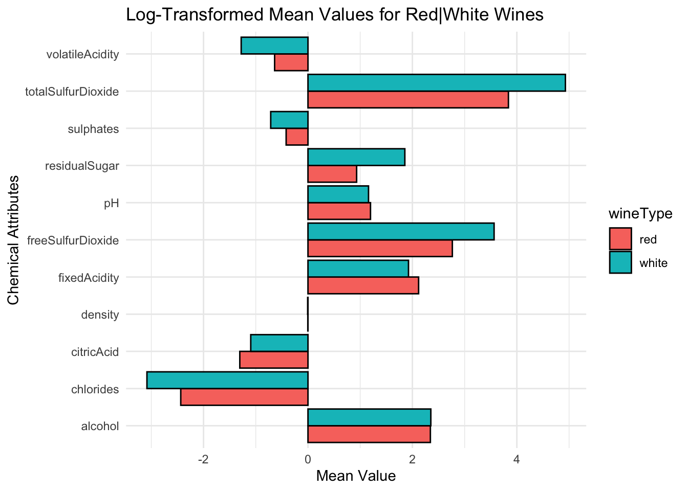
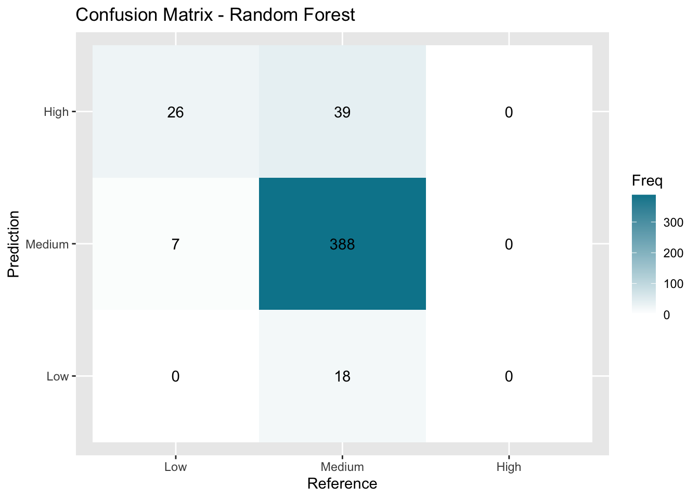
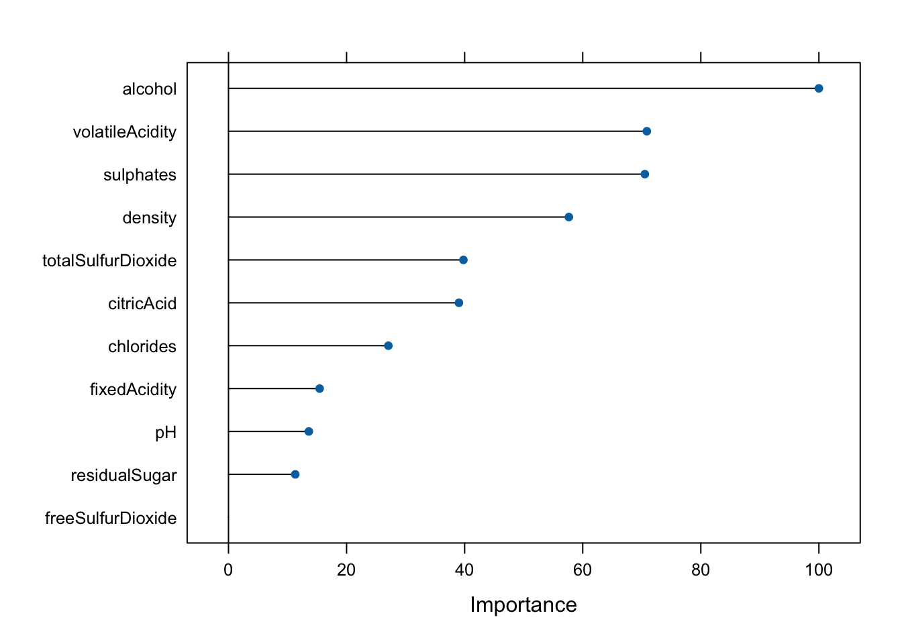

Exploring wine attributes through EDA, MANOVA, and classification models reveals significant chemical differences and predictors of wine type and quality.
Author
Brian Cervantes Alvarez
Published
December 14, 2023
Modified
April 8, 2025
Yapper Labs | AI Summary
Model: ChatGPT 4.5
I performed exploratory data analysis and applied multivariate statistical methods, including MANOVA and Principal Component Analysis (PCA), to distinguish red from white wines and identify key variables predicting wine quality. My Random Forest classification model achieved an excellent recall of approximately 98.96% in distinguishing wine types, and an accuracy of 69.2% in predicting wine quality categories. PCA identified influential components like ‘Wine Body’ and ‘Fermentation Characteristics,’ contributing significantly (68.13% accuracy with 11 principal components) to effective classification performance.
Distinguish White Wines From Red Wines
Perform EDA on Red & White Wine Means:
I conducted an exploratory data analysis in comparing means for the 11 chemical attributes in the red and white wines. Notably, ‘totalSulfurDioxide’ showed significant mean differences, followed by ‘freeSulfurDioxide’ and ‘residualSugar.’ These attributes currently stand out showing a clear difference between the means of white and red wines.
Perform MANOVA to determine if there are a significant difference in mean vectors between red and white wines with a 95% confidence level.
The MANOVA reveals a significant disparity in the means for specific chemical traits between red and white wines. Notably, Pillai’s Trace (0.86158) indicates a robust effect, accounting for approximately 86.128\% of the variance. The p-value of 2.2 \times 10^{-16} signifies significant differences in the mean vectors. Hence, the MANOVA decisively rejects the null hypothesis of no difference in means, and we have exceptionally high confidence in accepting the alternative-that there is a difference in means between each wine.
Perform Classification Modeling on Red & White Wines
Train-Test Split & Cross-Validation Set up
I performed a train-test split to ensure the models can handle new, unseen data. I allocated 70\% to the training data to have a larger sample for the testing data (30\%). To enhance reliability, I employed cross-validation, repeatedly splitting the data into different training and testing sets. This approach provides a more comprehensive evaluation of the model’s effectiveness.
Random Forest, SVM and Logistic Models
For my models, I’ve selected Random Forest, Support Vector Machine, and Logistic Regression as promising candidates for effective classification. Logistic Regression is particularly beneficial in binary classification scenarios due to its simplicity and interpretability. Meanwhile, Random Forest excels in capturing complex relationships through ensemble learning, and Support Vector Machine demonstrates proficiency in handling both linear and non-linear patterns. As the results will show later, Random Forest performed the best followed by SVM. Note, the models were not tuned to use their best hyperparameters.
Metrics & Variable Importance
The confusion matrix for the red and white wine classification using the Random Forest model shows strong performance. The model correctly identified 474 red wines and 1464 white wines, with only 5 red wines and 5 white wines misclassified. This indicates high accuracy in both precision and recall. In comparison to the Support Vector Machine (SVM) and Logistic Regression models, the Random Forest performed better by minimizing misclassifications. The SVM model had slightly more misclassified instances (13 in total), while the Logistic Regression model had 17 misclassifications. The Random Forest’s performance makes it a better choice for this classifying red and white wines compared to SVM and Logistic Regression.
The variable importance analysis shows that “chlorides,” with a significance of 100%, is the most crucial feature for distinguishing red and white wines. Additionally, “totalSulfurDioxide” (96.92%) and “volatileAcidity” (43.47%) also played key roles, contributing to the model’s clear performance in wine classification.
Classifying a New Red Wine Drawn From The Same Population
To estimate the probability of correctly classifying a new red wine drawn from the same population, we can use the concept of recall.
So, the estimated probability of correctly classifying a new red wine, drawn from the same population, is approximately \frac{474}{479}, or roughly 98.96\%. This suggests a very high probability of correctly identifying red wines based on the model’s current performance.
K-Means Clustering
I chose k-means clustering with Euclidean distance for its efficiency with standardized numerical data. While k = 2 visually showed a clear distinction between red and white wines, higher k values (for example, 3 or 4) led to overlapping clusters, affecting the meaningful separation observed with k = 2.
Which Variables Are The Most Important To Wine Quality In Red Wines?
Perform MANOVAs To Determine If There Are A Significant Difference In Mean Vectors Between Wines With Different Quality/Quality Groups With A 95% Confidence Level.
MANOVA for Quality Levels 3, 4, 5, 6, 7, 8
\begin{align*}
&H_0: \mu_2 = \mu_3 = \mu_4 = \mu_5 = \mu_6 = \mu_7 = \mu_8 \\
&H_A: \text{At least one of } \mu_2, \mu_3, \mu_4, \mu_5, \mu_6, \mu_7, \text{ or } \mu_8 \text{ is different}
\end{align*}
In the first analysis, we looked at the Original Quality Scores, and the results were highly significant. The p-value was super close to zero, less than 2.2 x 10^{-16}. This means there are big differences in the average chemical properties for different quality scores. Therefore, the mean vectors for each quality level varied, providing strong support for rejecting the null hypothesis.
MANOVA for Quality Groups [Low, Medium, High]
\begin{align*}
&H_0: \mu_{\text{Low}} = \mu_{\text{Medium}} = \mu_{\text{High}} \\
&H_A: \text{At least one of } \mu_{\text{Low}}, \mu_{\text{Medium}}, \text{ or } \mu_{\text{High}} \text{ is different}
\end{align*}
In the second analysis, we focused on Quality Groups (Low, Medium, High), and the results were also highly significant. The p-value was very close to zero, less than 2.2 x 10^{-16}. This indicates significant differences in the average chemical properties across different quality groups. We have strong evidence that the mean vectors between each quality group differed. Therefore, we have evidence to reject the null and be in favor of the alternative.
Overall MANOVA Test Conclusion
To summarize, our MANOVA tests reveal significant differences in average values for both original quality scores and quality groups. For original scores, statistics like Pillai’s trace and Wilks’ lambda had extremely low p-values p < 2.2 x 10^{-16}. Quality groups exhibited similar results.
Perform Classification on Quality for Red Wines
Random Forest and SVM models
I performed the same procedure from the previous classification of red and white wines. I’ve selected Random Forest & Support Vector Machine the top models for classification. Logistic Regression is not designed for multiple classes. Interestingly, the Random Forest performed the best again, followed by SVM. It’s important to note that the models were not fine-tuned for hyperparameters at this stage.
Metrics & Variable Importance
Random Forest emerged as the top-performing model once again, with an accuracy of 69.2\%. For instance, we can observe that quality level 5 has the highest number of correct predictions (163), while quality levels 4 and 6 have some misclassifications. Among the features, alcohol, total sulfur dioxide, and volatile acidity emerged as the top three influential variables, showcasing their significance in predicting wine quality in red wines.
Perform Principal Component Analysis
Explaining PC1 & PC2
PC1 can be interpreted as representing “Wine Body.” Red wines with higher fixed acidity, citric acid, free sulfur dioxide, and total sulfur dioxide contribute positively to this component, indicating a fuller and more robust body. Hence, higher levels of volatile acidity, residual sugar, and alcohol contribute negatively to this component.
PC2 can be labeled as “Fermentation Characteristics.” Additionally, red wines with elevated levels of free sulfur dioxide, total sulfur dioxide, and density contribute positively to this component, highlighting aspects related to the fermentation process. On the other end, higher alcohol content and volatile acidity contribute negatively to PC2.
Random Forest Model with 2 PCA
In the confusion matrix, it’s evident that the model struggled to accurately predict certain classes, particularly in categories 3, 4, and 7, where the predicted values differ from the actual values. To add, random forest model achieved an accuracy of 58.07% which is quite below the previous models. Despite its limitations, the model demonstrated some success in capturing patterns related to “Wine Body” and “Fermentation Characteristics.” And it’s with just 2 variables with linear combinations.
Random Forest Model with 11 PCAs
The random forest model attained an accuracy of 68.13%. Plus, it excelled in predicting class 5 but faced challenges in classes 3, 4, 6, and 7. Principal Component Analysis (PCA) highlights PC2 as the most influential (100%), followed by PC3 (80.49%), PC5 (32.47%), and others. This suggests a need for further analysis to enhance predictions in specific classes and leverage insights from key Principal Components for optimization.
Comparison between Random Forest Models (normal, 2PCs, 11PCs)
In comparing the Random Forest models, both the normal model and the 11 PCs model achieve an accuracy of approximately 68%, surpassing the 2 PCs model, which attains an accuracy of 58.07%. It’s noteworthy that the 2 PCs model demonstrates the potency of PCA, albeit with a trade-off in interpretability. Despite the challenges encountered, each model variant provides valuable insights for optimizing the predictive power. The room for improvement is wide open. Factors such as hyperparameter tuning, other models that were not explored, feature engineering, and delving further into factor analysis are instances that could be used to maximize performance.
Appendix
Goal 1: Distinguish White Wines From Red Wines
# Set scipen to a high value to disable scientific notationoptions(scipen =999)library(tidyverse)library(caret)library(cluster) library(factoextra)library(MASS)library(rstatix)# Read in the wine datasetsredWine <-read_csv("../../../assets/datasets/winequality-red.csv")whiteWine <-read_csv("../../../assets/datasets/winequality-white.csv")# Look at the structure of the wine dataglimpse(redWine)
# Calculate the mean vectors for red and white wines # separately for each of the 11 chemical attributesmeanVectors <- wineDs %>%group_by(wineType) %>%summarize_all(mean)# Display the mean vectorshead(meanVectors, 2)
# Convert to long format for plottingmeanDs <- tidyr::gather(meanVectors,key ="attribute", value ="means", -wineType)#meanDs# Plotp1 <-ggplot(meanDs, aes(x = means, y = attribute, fill = wineType)) +geom_bar(stat ="identity", position ="dodge", color ="black") +labs(title ="Mean Values for Red|White Wines",x ="Mean Value",y ="Chemical Attributes") +theme_minimal()# Plotp2 <-ggplot(meanDs, aes(x =log(means), y = attribute, fill = wineType)) +geom_bar(stat ="identity", position ="dodge", color ="black") +labs(title ="Log-Transformed Mean Values for Red|White Wines",x ="Mean Value",y ="Chemical Attributes") +theme_minimal()meanDifDs <- meanDs %>%spread(wineType, means) %>%mutate(meanDifference = red - white)# Plot the mean differencesp3 <-ggplot(meanDifDs, aes(x = meanDifference, y = attribute)) +geom_bar(stat ="identity", position ="dodge", fill ="red", color ="black") +labs(title ="Mean Differences between Red & White Wines",x ="Mean Difference",y ="Chemical Attributes") +theme_minimal()# Show plot 1 for reportp1
p2

p3
Perform MANOVA to determine if there are a significant difference in mean vectors between red and white wines with a 95% confidence level.
wineManova <-manova(cbind(chlorides, density, pH, sulphates, alcohol, fixedAcidity, volatileAcidity, citricAcid, residualSugar, freeSulfurDioxide, totalSulfurDioxide) ~ wineType, data = wineDs) # Print the summary of the MANOVAsummary(wineManova)
Perform Classification Modeling on Red & White Wines
Train-Test Split & Cross-Validation Set up
splitIndex <-createDataPartition(wineDs$wineType, p =0.7, list =FALSE)trainData <- wineDs[splitIndex, ]testData <- wineDs[-splitIndex, ]# Create Repeated cross-validationctrl <-trainControl(method ="repeatedcv", number =5, repeats =3, verboseIter =FALSE)
Random Forest, SVM and Logistic Models
set.seed(2013)# Train Random ForestrfModel <-train(wineType ~ ., data = trainData,method ="rf",control = ctrl,ntree =200)# Train Logistic RegressionlogisticModel <-train(wineType ~ ., data = trainData,method ="glm",family ="binomial")# Train Support Vector MachinesvmModel <-train(wineType ~ ., data = trainData,method ="svmRadial",trControl = ctrl)# Make predictions on the test set for each modelrfPred <-predict(rfModel, newdata = testData)logisticPred <-predict(logisticModel, newdata = testData)svmPred <-predict(svmModel, newdata = testData)
Metrics & Variable Importance
# Random Forest model metricsconfMatrixRF <-confusionMatrix(rfPred, testData$wineType, dnn =c("Prediction", "Reference"))accuracyRF <- confMatrixRF$overall["Accuracy"]# Logistic Regression model metricsconfMatrixLogistic <-confusionMatrix(logisticPred, testData$wineType, dnn =c("Prediction", "Reference"))accuracyLogistic <- confMatrixLogistic$overall["Accuracy"]# SVM model metricsconfMatrixSVM <-confusionMatrix(svmPred, testData$wineType, dnn =c("Prediction", "Reference"))accuracySVM <- confMatrixSVM$overall["Accuracy"]# Plot Confusion MatricesplotCM <-function(confMatrix, modelName) { plt <-as.data.frame(confMatrix$table) plt$Prediction <-factor(plt$Prediction, levels =rev(levels(plt$Prediction)))ggplot(plt, aes(Prediction, Reference, fill = Freq)) +geom_tile() +geom_text(aes(label = Freq)) +scale_fill_gradient(low ="white", high ="#00859B") +labs(title =paste("Confusion Matrix -", modelName),x ="Reference", y ="Prediction") +scale_x_discrete(labels =levels(testData$wineType)) +scale_y_discrete(labels =levels(testData$wineType))}#confMatrixRFconfMatrixLogistic
Confusion Matrix and Statistics
Reference
Prediction red white
red 473 6
white 6 1463
Accuracy : 0.9938
95% CI : (0.9893, 0.9968)
No Information Rate : 0.7541
P-Value [Acc > NIR] : <0.0000000000000002
Kappa : 0.9834
Mcnemar's Test P-Value : 1
Sensitivity : 0.9875
Specificity : 0.9959
Pos Pred Value : 0.9875
Neg Pred Value : 0.9959
Prevalence : 0.2459
Detection Rate : 0.2428
Detection Prevalence : 0.2459
Balanced Accuracy : 0.9917
'Positive' Class : red
#confMatrixSVM# Plot Confusion Matrices for each modelplotCM(confMatrixRF, "Random Forest")
Goal 2: Which Variables Are The Most Important To Wine Quality In Red Wines.
Perform MANOVAs to determine if there are a significant difference in mean vectors between wines with different quality/quality groups with a 95% confidence level?
# Split the dataset into training and testing setssplitIndex <-createDataPartition(qualityDs$quality, p =0.7, list =FALSE)trainData <- qualityDs[splitIndex, ]testData <- qualityDs[-splitIndex, ]# Create a train control object for repeated cross-validationctrl <-trainControl(method ="repeatedcv", number =5, repeats =3, verboseIter =FALSE)
Random Forest and SVM models
set.seed(2013)# Random Forest modelrfModel <-train(quality ~ ., data = trainData,method ="rf",control = ctrl,ntree =200)# (SVM) modelsvmModel <-train(quality ~ ., data = trainData,method ="svmLinear",trControl = ctrl)# Make predictions on the test set for each modelrfPred <-predict(rfModel, newdata = testData)svmPred <-predict(svmModel, newdata = testData)
Repeat for Grouped Quality Setting (Low, Medium, High)
Setting up data for classification
groupedQualityDs <- redWineDs %>%select(-quality)
Train-Test-Split & Cross-Validation Set up
# Split the dataset into training and testing setssplitIndex <-createDataPartition(groupedQualityDs$qualityGroup, p =0.7, list =FALSE)trainData <- groupedQualityDs[splitIndex, ]testData <- groupedQualityDs[-splitIndex, ]# Create a train control object for repeated cross-validationctrl <-trainControl(method ="repeatedcv", number =5, repeats =3, verboseIter =FALSE)
Random Forest and SVM models
set.seed(2013)# Train Random Forest classifier using caretrfModel <-train(qualityGroup ~ ., data = trainData,method ="rf",control = ctrl,ntree =200)# Train Support Vector Machine (SVM) model using caretsvmModel <-train(qualityGroup ~ ., data = trainData,method ="svmRadial",trControl = ctrl)# Make predictions on the test set for each modelrfPred <-predict(rfModel, newdata = testData)svmPred <-predict(svmModel, newdata = testData)
Confusion Matrix and Statistics
Reference
Prediction Low Medium High
Low 0 0 0
Medium 18 388 39
High 0 7 26
Overall Statistics
Accuracy : 0.8661
95% CI : (0.8323, 0.8953)
No Information Rate : 0.8264
P-Value [Acc > NIR] : 0.01092
Kappa : 0.395
Mcnemar's Test P-Value : NA
Statistics by Class:
Class: Low Class: Medium Class: High
Sensitivity 0.00000 0.9823 0.40000
Specificity 1.00000 0.3133 0.98305
Pos Pred Value NaN 0.8719 0.78788
Neg Pred Value 0.96234 0.7879 0.91236
Prevalence 0.03766 0.8264 0.13598
Detection Rate 0.00000 0.8117 0.05439
Detection Prevalence 0.00000 0.9310 0.06904
Balanced Accuracy 0.50000 0.6478 0.69153
svmConfMatrix
Confusion Matrix and Statistics
Reference
Prediction Low Medium High
Low 0 0 0
Medium 18 393 50
High 0 2 15
Overall Statistics
Accuracy : 0.8536
95% CI : (0.8186, 0.884)
No Information Rate : 0.8264
P-Value [Acc > NIR] : 0.06328
Kappa : 0.2611
Mcnemar's Test P-Value : NA
Statistics by Class:
Class: Low Class: Medium Class: High
Sensitivity 0.00000 0.9949 0.23077
Specificity 1.00000 0.1807 0.99516
Pos Pred Value NaN 0.8525 0.88235
Neg Pred Value 0.96234 0.8824 0.89154
Prevalence 0.03766 0.8264 0.13598
Detection Rate 0.00000 0.8222 0.03138
Detection Prevalence 0.00000 0.9644 0.03556
Balanced Accuracy 0.50000 0.5878 0.61296
plotCM(rfConfMatrix, "Random Forest")

plotCM(svmConfMatrix, "SVM")
Look at variable importance
plot(varImp(rfModel))

This website uses Google Analytics to improve its functionality.
Source Code
---title: "Applied Multivariate Analysis"author: "Brian Cervantes Alvarez"date: "12-14-2023"date-modified: todaydescription: "Exploring wine attributes through EDA, MANOVA, and classification models reveals significant chemical differences and predictors of wine type and quality."teaser: "Bringing modern stats to uncover wine attribute patterns and differences."categories: ["Statistics"]image: /assets/images/redwhite.jpegformat: html: code-tools: true toc: true toc-location: right html-math-method: katex page-layout: articleexecute: warning: false message: falseai-summary: banner-title: "Yapper Labs | AI Summary" model-title: "Model: ChatGPT 4.5" model-img: "/assets/images/OpenAI-white-monoblossom.svg" summary: "I performed exploratory data analysis and applied multivariate statistical methods, including MANOVA and Principal Component Analysis (PCA), to distinguish red from white wines and identify key variables predicting wine quality. My Random Forest classification model achieved an excellent recall of approximately 98.96% in distinguishing wine types, and an accuracy of 69.2% in predicting wine quality categories. PCA identified influential components like 'Wine Body' and 'Fermentation Characteristics,' contributing significantly (68.13% accuracy with 11 principal components) to effective classification performance."---# Distinguish White Wines From Red Wines## Perform EDA on Red & White Wine Means:I conducted an exploratory data analysis in comparing means for the 11 chemical attributes in the red and white wines. Notably, 'totalSulfurDioxide' showed significant mean differences, followed by 'freeSulfurDioxide' and 'residualSugar.' These attributes currently stand out showing a clear difference between the means of white and red wines.## Perform MANOVA to determine if there are a significant difference in mean vectors between red and white wines with a 95% confidence level.\begin{align*}&H_0: \bar{\mu}_{\text{red}} = \bar{\mu}_{\text{white}} \\&H_A: \bar{\mu}_{\text{red}} \neq \bar{\mu}_{\text{white}}\end{align*}### MANOVA ResultsThe MANOVA reveals a significant disparity in the means for specific chemical traits between red and white wines. Notably, Pillai's Trace $(0.86158)$ indicates a robust effect, accounting for approximately $86.128\%$ of the variance. The p-value of $2.2 \times 10^{-16}$ signifies significant differences in the mean vectors. Hence, the MANOVA decisively rejects the null hypothesis of no difference in means, and we have exceptionally high confidence in accepting the alternative-that there is a difference in means between each wine.## Perform Classification Modeling on Red & White Wines### Train-Test Split & Cross-Validation Set upI performed a train-test split to ensure the models can handle new, unseen data. I allocated $70\%$ to the training data to have a larger sample for the testing data $(30\%)$. To enhance reliability, I employed cross-validation, repeatedly splitting the data into different training and testing sets. This approach provides a more comprehensive evaluation of the model's effectiveness.### Random Forest, SVM and Logistic ModelsFor my models, I've selected Random Forest, Support Vector Machine, and Logistic Regression as promising candidates for effective classification. Logistic Regression is particularly beneficial in binary classification scenarios due to its simplicity and interpretability. Meanwhile, Random Forest excels in capturing complex relationships through ensemble learning, and Support Vector Machine demonstrates proficiency in handling both linear and non-linear patterns. As the results will show later, Random Forest performed the best followed by SVM. Note, the models were not tuned to use their best hyperparameters.### Metrics & Variable ImportanceThe confusion matrix for the red and white wine classification using the Random Forest model shows strong performance. The model correctly identified $474$ red wines and $1464$ white wines, with only $5$ red wines and $5$ white wines misclassified. This indicates high accuracy in both precision and recall. In comparison to the Support Vector Machine (SVM) and Logistic Regression models, the Random Forest performed better by minimizing misclassifications. The SVM model had slightly more misclassified instances ($13$ in total), while the Logistic Regression model had $17$ misclassifications. The Random Forest's performance makes it a better choice for this classifying red and white wines compared to SVM and Logistic Regression.The variable importance analysis shows that "chlorides," with a significance of $100%$, is the most crucial feature for distinguishing red and white wines. Additionally, "totalSulfurDioxide" $(96.92%)$ and "volatileAcidity" $(43.47%)$ also played key roles, contributing to the model's clear performance in wine classification.### Classifying a New Red Wine Drawn From The Same PopulationTo estimate the probability of correctly classifying a new red wine drawn from the same population, we can use the concept of recall.In our confusion matrix:$$ \text{Recall (for red wine)} = \frac{\text{True Positives (TP)}}{\text{True Positives (TP) + False Negatives (FN)}} $$To find the probability:$$ \text{Recall (for red wine)} = \frac{474}{474 + 5} = \frac{474}{479} = 0.9896$$So, the estimated probability of correctly classifying a new red wine, drawn from the same population, is approximately $\frac{474}{479}$, or roughly $98.96\%$. This suggests a very high probability of correctly identifying red wines based on the model's current performance.## K-Means ClusteringI chose k-means clustering with Euclidean distance for its efficiency with standardized numerical data. While k = 2 visually showed a clear distinction between red and white wines, higher k values (for example, 3 or 4) led to overlapping clusters, affecting the meaningful separation observed with k = 2.# Which Variables Are The Most Important To Wine Quality In Red Wines?## Perform MANOVAs To Determine If There Are A Significant Difference In Mean Vectors Between Wines With Different Quality/Quality Groups With A 95% Confidence Level.### MANOVA for Quality Levels 3, 4, 5, 6, 7, 8\begin{align*}&H_0: \mu_2 = \mu_3 = \mu_4 = \mu_5 = \mu_6 = \mu_7 = \mu_8 \\&H_A: \text{At least one of } \mu_2, \mu_3, \mu_4, \mu_5, \mu_6, \mu_7, \text{ or } \mu_8 \text{ is different}\end{align*}In the first analysis, we looked at the Original Quality Scores, and the results were highly significant. The p-value was super close to zero, less than $2.2 x 10^{-16}$. This means there are big differences in the average chemical properties for different quality scores. Therefore, the mean vectors for each quality level varied, providing strong support for rejecting the null hypothesis.### MANOVA for Quality Groups \[Low, Medium, High\]\begin{align*}&H_0: \mu_{\text{Low}} = \mu_{\text{Medium}} = \mu_{\text{High}} \\&H_A: \text{At least one of } \mu_{\text{Low}}, \mu_{\text{Medium}}, \text{ or } \mu_{\text{High}} \text{ is different}\end{align*}In the second analysis, we focused on Quality Groups (Low, Medium, High), and the results were also highly significant. The p-value was very close to zero, less than $2.2 x 10^{-16}$. This indicates significant differences in the average chemical properties across different quality groups. We have strong evidence that the mean vectors between each quality group differed. Therefore, we have evidence to reject the null and be in favor of the alternative.### Overall MANOVA Test ConclusionTo summarize, our MANOVA tests reveal significant differences in average values for both original quality scores and quality groups. For original scores, statistics like Pillai's trace and Wilks' lambda had extremely low p-values $p < 2.2 x 10^{-16}$. Quality groups exhibited similar results.## Perform Classification on Quality for Red Wines### Random Forest and SVM modelsI performed the same procedure from the previous classification of red and white wines. I've selected Random Forest & Support Vector Machine the top models for classification. Logistic Regression is not designed for multiple classes. Interestingly, the Random Forest performed the best again, followed by SVM. It's important to note that the models were not fine-tuned for hyperparameters at this stage.### Metrics & Variable ImportanceRandom Forest emerged as the top-performing model once again, with an accuracy of $69.2\%$. For instance, we can observe that quality level 5 has the highest number of correct predictions $(163)$, while quality levels $4$ and $6$ have some misclassifications. Among the features, alcohol, total sulfur dioxide, and volatile acidity emerged as the top three influential variables, showcasing their significance in predicting wine quality in red wines.## Perform Principal Component Analysis### Explaining PC1 & PC2PC1 can be interpreted as representing "Wine Body." Red wines with higher fixed acidity, citric acid, free sulfur dioxide, and total sulfur dioxide contribute positively to this component, indicating a fuller and more robust body. Hence, higher levels of volatile acidity, residual sugar, and alcohol contribute negatively to this component.PC2 can be labeled as "Fermentation Characteristics." Additionally, red wines with elevated levels of free sulfur dioxide, total sulfur dioxide, and density contribute positively to this component, highlighting aspects related to the fermentation process. On the other end, higher alcohol content and volatile acidity contribute negatively to PC2.### Random Forest Model with 2 PCAIn the confusion matrix, it's evident that the model struggled to accurately predict certain classes, particularly in categories 3, 4, and 7, where the predicted values differ from the actual values. To add, random forest model achieved an accuracy of 58.07% which is quite below the previous models. Despite its limitations, the model demonstrated some success in capturing patterns related to "Wine Body" and "Fermentation Characteristics." And it's with just 2 variables with linear combinations.### Random Forest Model with 11 PCAsThe random forest model attained an accuracy of 68.13%. Plus, it excelled in predicting class 5 but faced challenges in classes 3, 4, 6, and 7. Principal Component Analysis (PCA) highlights PC2 as the most influential (100%), followed by PC3 (80.49%), PC5 (32.47%), and others. This suggests a need for further analysis to enhance predictions in specific classes and leverage insights from key Principal Components for optimization.### Comparison between Random Forest Models (normal, 2PCs, 11PCs)In comparing the Random Forest models, both the normal model and the 11 PCs model achieve an accuracy of approximately 68%, surpassing the 2 PCs model, which attains an accuracy of 58.07%. It's noteworthy that the 2 PCs model demonstrates the potency of PCA, albeit with a trade-off in interpretability. Despite the challenges encountered, each model variant provides valuable insights for optimizing the predictive power. The room for improvement is wide open. Factors such as hyperparameter tuning, other models that were not explored, feature engineering, and delving further into factor analysis are instances that could be used to maximize performance.{{< pagebreak >}}# Appendix# Goal 1: Distinguish White Wines From Red Wines```{r}# Set scipen to a high value to disable scientific notationoptions(scipen =999)library(tidyverse)library(caret)library(cluster) library(factoextra)library(MASS)library(rstatix)# Read in the wine datasetsredWine <-read_csv("../../../assets/datasets/winequality-red.csv")whiteWine <-read_csv("../../../assets/datasets/winequality-white.csv")# Look at the structure of the wine dataglimpse(redWine)glimpse(whiteWine)# Run a quick summary for both datasets#summary(redWine)#summary(whiteWine)# Add a 'wine_type' column to identify the wine typeredWine$wineType <-"red"whiteWine$wineType <-"white"# Combine the datasetswine <-bind_rows(redWine, whiteWine)# Rename columns for better readability and consistencywine <- wine %>% dplyr::mutate(fixedAcidity =`fixed acidity`,volatileAcidity =`volatile acidity`,citricAcid =`citric acid`,residualSugar =`residual sugar`,freeSulfurDioxide =`free sulfur dioxide`,totalSulfurDioxide =`total sulfur dioxide`,wineType =factor(wineType, levels =c("red", "white"))) %>% dplyr::select(-c(`fixed acidity`,`volatile acidity`,`citric acid`,`residual sugar`,`free sulfur dioxide`,`total sulfur dioxide`))# Check for quality countswine %>%group_by(quality) %>%summarise(totalCount =n())wineDs <- wine %>%select(-quality)names(wineDs)glimpse(wineDs)sum(is.na(wineDs))```## Perform EDA on Red & White Wine Means:```{r}# Calculate the mean vectors for red and white wines # separately for each of the 11 chemical attributesmeanVectors <- wineDs %>%group_by(wineType) %>%summarize_all(mean)# Display the mean vectorshead(meanVectors, 2)# Convert to long format for plottingmeanDs <- tidyr::gather(meanVectors,key ="attribute", value ="means", -wineType)#meanDs# Plotp1 <-ggplot(meanDs, aes(x = means, y = attribute, fill = wineType)) +geom_bar(stat ="identity", position ="dodge", color ="black") +labs(title ="Mean Values for Red|White Wines",x ="Mean Value",y ="Chemical Attributes") +theme_minimal()# Plotp2 <-ggplot(meanDs, aes(x =log(means), y = attribute, fill = wineType)) +geom_bar(stat ="identity", position ="dodge", color ="black") +labs(title ="Log-Transformed Mean Values for Red|White Wines",x ="Mean Value",y ="Chemical Attributes") +theme_minimal()meanDifDs <- meanDs %>%spread(wineType, means) %>%mutate(meanDifference = red - white)# Plot the mean differencesp3 <-ggplot(meanDifDs, aes(x = meanDifference, y = attribute)) +geom_bar(stat ="identity", position ="dodge", fill ="red", color ="black") +labs(title ="Mean Differences between Red & White Wines",x ="Mean Difference",y ="Chemical Attributes") +theme_minimal()# Show plot 1 for reportp1p2p3```## Perform MANOVA to determine if there are a significant difference in mean vectors between red and white wines with a 95% confidence level.```{r}wineManova <-manova(cbind(chlorides, density, pH, sulphates, alcohol, fixedAcidity, volatileAcidity, citricAcid, residualSugar, freeSulfurDioxide, totalSulfurDioxide) ~ wineType, data = wineDs) # Print the summary of the MANOVAsummary(wineManova)```### MANOVA Results## Perform Classification Modeling on Red & White Wines### Train-Test Split & Cross-Validation Set up```{r}splitIndex <-createDataPartition(wineDs$wineType, p =0.7, list =FALSE)trainData <- wineDs[splitIndex, ]testData <- wineDs[-splitIndex, ]# Create Repeated cross-validationctrl <-trainControl(method ="repeatedcv", number =5, repeats =3, verboseIter =FALSE)```### Random Forest, SVM and Logistic Models```{r}set.seed(2013)# Train Random ForestrfModel <-train(wineType ~ ., data = trainData,method ="rf",control = ctrl,ntree =200)# Train Logistic RegressionlogisticModel <-train(wineType ~ ., data = trainData,method ="glm",family ="binomial")# Train Support Vector MachinesvmModel <-train(wineType ~ ., data = trainData,method ="svmRadial",trControl = ctrl)# Make predictions on the test set for each modelrfPred <-predict(rfModel, newdata = testData)logisticPred <-predict(logisticModel, newdata = testData)svmPred <-predict(svmModel, newdata = testData)```### Metrics & Variable Importance```{r}# Random Forest model metricsconfMatrixRF <-confusionMatrix(rfPred, testData$wineType, dnn =c("Prediction", "Reference"))accuracyRF <- confMatrixRF$overall["Accuracy"]# Logistic Regression model metricsconfMatrixLogistic <-confusionMatrix(logisticPred, testData$wineType, dnn =c("Prediction", "Reference"))accuracyLogistic <- confMatrixLogistic$overall["Accuracy"]# SVM model metricsconfMatrixSVM <-confusionMatrix(svmPred, testData$wineType, dnn =c("Prediction", "Reference"))accuracySVM <- confMatrixSVM$overall["Accuracy"]# Plot Confusion MatricesplotCM <-function(confMatrix, modelName) { plt <-as.data.frame(confMatrix$table) plt$Prediction <-factor(plt$Prediction, levels =rev(levels(plt$Prediction)))ggplot(plt, aes(Prediction, Reference, fill = Freq)) +geom_tile() +geom_text(aes(label = Freq)) +scale_fill_gradient(low ="white", high ="#00859B") +labs(title =paste("Confusion Matrix -", modelName),x ="Reference", y ="Prediction") +scale_x_discrete(labels =levels(testData$wineType)) +scale_y_discrete(labels =levels(testData$wineType))}#confMatrixRFconfMatrixLogistic#confMatrixSVM# Plot Confusion Matrices for each modelplotCM(confMatrixRF, "Random Forest")plotCM(confMatrixLogistic, "Logistic Regression")plotCM(confMatrixSVM, "Support Vector Machine (SVM)")# Print the metrics for each modelprint("Random Forest Model Results")print(paste("Accuracy:", round(accuracyRF, 4)))print("Logistic Regression Model Results:")print(paste("Accuracy:", round(accuracyLogistic, 4)))print("Support Vector Machine (SVM) Model Results:")print(paste("Accuracy:", round(accuracySVM, 4)))# Get variable importance from the best modelvarImp(rfModel)```### Classifying a New Red Wine Drawn From The Same Population## Clustering:```{r}set.seed(123)ds <- wineDs %>%select(-wineType)ds <-scale(ds)fviz_nbclust(ds, kmeans, method='silhouette')km.final <-kmeans(ds, 2, nstart =30)fviz_cluster(km.final, data = ds, geom ="point",ellipse.type ="convex", ggtheme =theme_bw())```# Goal 2: Which Variables Are The Most Important To Wine Quality In Red Wines.## Perform MANOVAs to determine if there are a significant difference in mean vectors between wines with different quality/quality groups with a 95% confidence level?### MANOVA for Quality Levels 3, 4, 5, 6, 7, 8```{r}redWineDs <- wine %>%filter(wineType =="red") %>%select(-wineType)# Extracting ColumnscolVars <-cbind( redWineDs$chlorides, redWineDs$density, redWineDs$pH, redWineDs$sulphates, redWineDs$alcohol, redWineDs$fixedAcidity, redWineDs$volatileAcidity, redWineDs$citricAcid, redWineDs$residualSugar, redWineDs$freeSulfurDioxide, redWineDs$totalSulfurDioxide)# MANOVA Analysis - Quality, levels = 3,4,5,6,7,8manaovaTest <-manova(colVars ~ quality, data = redWineDs)summary(manaovaTest)```### MANOVA for Quality Groups \[Low, Medium, High\]```{r}# Adding qualityGroupredWineDs <- redWineDs %>%mutate(qualityGroup =case_when( quality %in%3:4~"Low", quality %in%5:6~"Medium", quality %in%7:8~"High" ) ) %>%mutate(qualityGroup =factor(qualityGroup, levels =c("Low", "Medium", "High")))colVarsCategorized <-cbind( redWineDs$chlorides, redWineDs$density, redWineDs$pH, redWineDs$sulphates, redWineDs$alcohol, redWineDs$fixedAcidity, redWineDs$volatileAcidity, redWineDs$citricAcid, redWineDs$residualSugar, redWineDs$freeSulfurDioxide, redWineDs$totalSulfurDioxide)# MANOVA Analysis - QualityGroup, Levels = "Low", "Medium", "High"manaovaTest <-manova(colVars ~ qualityGroup, data = redWineDs)summary(manaovaTest)```### Overall MANOVA Test Conclusion## Perform Classification on Quality for Red Wines```{r}qualityDs <- redWineDs %>%mutate(quality =factor(quality, levels =c("3","4","5","6","7","8"))) %>%select(-qualityGroup)``````{r}# Split the dataset into training and testing setssplitIndex <-createDataPartition(qualityDs$quality, p =0.7, list =FALSE)trainData <- qualityDs[splitIndex, ]testData <- qualityDs[-splitIndex, ]# Create a train control object for repeated cross-validationctrl <-trainControl(method ="repeatedcv", number =5, repeats =3, verboseIter =FALSE)```### Random Forest and SVM models```{r}set.seed(2013)# Random Forest modelrfModel <-train(quality ~ ., data = trainData,method ="rf",control = ctrl,ntree =200)# (SVM) modelsvmModel <-train(quality ~ ., data = trainData,method ="svmLinear",trControl = ctrl)# Make predictions on the test set for each modelrfPred <-predict(rfModel, newdata = testData)svmPred <-predict(svmModel, newdata = testData)```### Metrics & Variable Importance```{r}# Random Forest confusion matrixrfConfMatrix <-confusionMatrix(rfPred, testData$quality, dnn =c("Prediction", "Reference"))rfAccuracy <- rfConfMatrix$overall["Accuracy"]# SVM confusion matrixsvmConfMatrix <-confusionMatrix(svmPred, testData$quality, dnn =c("Prediction", "Reference"))svmAccuracy <- svmConfMatrix$overall["Accuracy"]# Print the resultsprint(paste("Random Forest Accuracy:", rfAccuracy))print(paste("SVM Accuracy:", svmAccuracy))rfConfMatrixsvmConfMatrix# Plot Confusion MatricesplotCM <-function(confMatrix, modelName) { plt <-as.data.frame(confMatrix$table) plt$Prediction <-factor(plt$Prediction, levels =rev(levels(plt$Prediction)))ggplot(plt, aes(Prediction, Reference, fill = Freq)) +geom_tile() +geom_text(aes(label = Freq)) +scale_fill_gradient(low ="white", high ="#00859B") +labs(title =paste("Confusion Matrix -", modelName),x ="Reference", y ="Prediction") +scale_x_discrete(labels =levels(testData$quality)) +scale_y_discrete(labels =levels(testData$quality))}plotCM(rfConfMatrix, "Random Forest")plotCM(svmConfMatrix, "SVM")plot(varImp(rfModel))```## Perform Principal Component Analysis### Part 1```{r}ds <-select(qualityDs, -quality)# Perform PCApcaResults <-prcomp(ds, scale = T, center = T)# Print PCA summarysummary(pcaResults)# Visualize PCA resultsfviz_eig(pcaResults, addlabels =TRUE, kaiser =TRUE)fviz_pca_ind(pcaResults, geom ="point", col.ind = qualityDs$quality, palette ="jco")fviz_pca_biplot(pcaResults, geom ="arrow", col.var ="contrib", palette ="jco", alpha =0.7)pcaDs <-rownames_to_column(as.data.frame(pcaResults$rotation))pcaDs %>%select(rowname, PC1, PC2)# Adding back the quality with principal componentsprc <-select(qualityDs, quality) %>%bind_cols(as.data.frame(pcaResults$x)) %>%select(quality, PC1, PC2) # Rename columnsprc <- prc %>%rename("Quality"= quality,"Wine Body"= PC1,"Fermentation Characteristics"= PC2 )prc2 <-select(qualityDs, quality) %>%bind_cols(as.data.frame(pcaResults$x)) %>%select(quality, PC1, PC2, PC3, PC4, PC5, PC6, PC7, PC8, PC9, PC10, PC11) prc2 <- prc2 %>%rename("Quality"= quality)prc2```### Part 2```{r}set.seed(2013)splitIndex <-createDataPartition(prc$Quality, p =0.7, list =FALSE)trainData <- prc[splitIndex, ]testData <- prc[-splitIndex, ]# Create Repeated cross-validationctrl <-trainControl(method ="repeatedcv", number =5, repeats =3, verboseIter =FALSE)# Train Random ForestrfModel <-train(Quality ~ ., data = trainData,method ="rf",control = ctrl,ntree =200)# Make predictions on the test set for each modelrfPred <-predict(rfModel, newdata = testData)# Plot Confusion MatricesplotCM <-function(confMatrix, modelName) { plt <-as.data.frame(confMatrix$table) plt$Prediction <-factor(plt$Prediction, levels =rev(levels(plt$Prediction)))ggplot(plt, aes(Prediction, Reference, fill = Freq)) +geom_tile() +geom_text(aes(label = Freq)) +scale_fill_gradient(low ="white", high ="#00859B") +labs(title =paste("Confusion Matrix -", modelName),x ="Reference", y ="Prediction") +scale_x_discrete(labels =levels(testData$Quality)) +scale_y_discrete(labels =levels(testData$Quality))}# Random Forest metricsrfConfMatrix <-confusionMatrix(rfPred, testData$Quality, dnn =c("Prediction", "Reference"))rfAccuracy <- rfConfMatrix$overall["Accuracy"]print(paste("Random Forest Accuracy:", rfAccuracy))plotCM(rfConfMatrix, "Random Forest")rfConfMatrix$table# Variable ImportancevarImp(rfModel)``````{r}set.seed(2013)splitIndex <-createDataPartition(prc2$Quality, p =0.7, list =FALSE)trainData <- prc2[splitIndex, ]testData <- prc2[-splitIndex, ]# Create Repeated cross-validationctrl <-trainControl(method ="repeatedcv", number =5, repeats =3, verboseIter =FALSE)# Train Random ForestrfModel <-train(Quality ~ ., data = trainData,method ="rf",control = ctrl,ntree =200)# Make predictions on the test set for each modelrfPred <-predict(rfModel, newdata = testData)# Plot Confusion MatricesplotCM <-function(confMatrix, modelName) { plt <-as.data.frame(confMatrix$table) plt$Prediction <-factor(plt$Prediction, levels =rev(levels(plt$Prediction)))ggplot(plt, aes(Prediction, Reference, fill = Freq)) +geom_tile() +geom_text(aes(label = Freq)) +scale_fill_gradient(low ="white", high ="#00859B") +labs(title =paste("Confusion Matrix -", modelName),x ="Reference", y ="Prediction") +scale_x_discrete(labels =levels(testData$Quality)) +scale_y_discrete(labels =levels(testData$Quality))}# Random Forest metricsrfConfMatrix <-confusionMatrix(rfPred, testData$Quality, dnn =c("Prediction", "Reference"))rfAccuracy <- rfConfMatrix$overall["Accuracy"]print(paste("Random Forest Accuracy:", rfAccuracy))plotCM(rfConfMatrix, "Random Forest")rfConfMatrix# Variable ImportancevarImp(rfModel)```## Repeat for Grouped Quality Setting (Low, Medium, High)### Setting up data for classification```{r}groupedQualityDs <- redWineDs %>%select(-quality)```### Train-Test-Split & Cross-Validation Set up```{r}# Split the dataset into training and testing setssplitIndex <-createDataPartition(groupedQualityDs$qualityGroup, p =0.7, list =FALSE)trainData <- groupedQualityDs[splitIndex, ]testData <- groupedQualityDs[-splitIndex, ]# Create a train control object for repeated cross-validationctrl <-trainControl(method ="repeatedcv", number =5, repeats =3, verboseIter =FALSE)```### Random Forest and SVM models```{r}set.seed(2013)# Train Random Forest classifier using caretrfModel <-train(qualityGroup ~ ., data = trainData,method ="rf",control = ctrl,ntree =200)# Train Support Vector Machine (SVM) model using caretsvmModel <-train(qualityGroup ~ ., data = trainData,method ="svmRadial",trControl = ctrl)# Make predictions on the test set for each modelrfPred <-predict(rfModel, newdata = testData)svmPred <-predict(svmModel, newdata = testData)```### Metrics```{r}# Plot Confusion MatricesplotCM <-function(confMatrix, modelName) { plt <-as.data.frame(confMatrix$table) plt$Prediction <-factor(plt$Prediction, levels =rev(levels(plt$Prediction)))ggplot(plt, aes(Prediction, Reference, fill = Freq)) +geom_tile() +geom_text(aes(label = Freq)) +scale_fill_gradient(low ="white", high ="#00859B") +labs(title =paste("Confusion Matrix -", modelName),x ="Reference", y ="Prediction") +scale_x_discrete(labels =levels(testData$qualityGroup)) +scale_y_discrete(labels =levels(testData$qualityGroup))}# Random Forest metricsrfConfMatrix <-confusionMatrix(rfPred, testData$qualityGroup, dnn =c("Prediction", "Reference"))svmConfMatrix <-confusionMatrix(svmPred, testData$qualityGroup, dnn =c("Prediction", "Reference"))rfConfMatrixsvmConfMatrixplotCM(rfConfMatrix, "Random Forest")plotCM(svmConfMatrix, "SVM")```### Look at variable importance```{r}plot(varImp(rfModel))```
 Model: ChatGPT 4.5
Model: ChatGPT 4.5